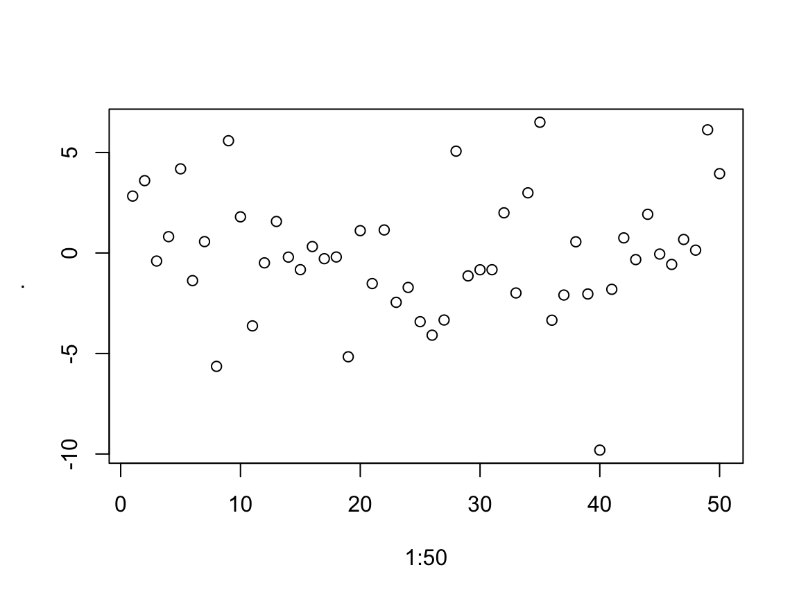

apply family functionsdplyr packageThe apply family functions, are functions which manipulate slices of data stored as matrices, arrays, lists and data-frames in a repetitive way.
These functions avoid the explicit use of loops, and might be more computationally efficient, depending on how big a dataset is. For more details on runtimes see this link.
apply allow you to perform operations with very few lines of code.
The family comprises: apply, lapply , sapply, vapply, mapply, rapply, and tapply. The difference lies in the structure of input data and the desired format of the output).
apply operates on arrays/matrices.
In the example below we obtain column sums of matrix X.
(X <- matrix(sample(30), nrow = 5, ncol = 6))## [,1] [,2] [,3] [,4] [,5] [,6]
## [1,] 29 24 1 27 25 4
## [2,] 5 18 28 9 21 8
## [3,] 11 10 7 19 12 15
## [4,] 2 14 23 26 17 13
## [5,] 30 16 6 22 20 3apply(X, MARGIN = 2 , FUN = sum)## [1] 77 82 65 103 95 43Note: that in a matrix MARGIN = 1 indicates rows and MARGIN = 2 indicates columns.
apply can be used with user-defined functions:print(X)## [,1] [,2] [,3] [,4] [,5] [,6]
## [1,] 29 24 1 27 25 4
## [2,] 5 18 28 9 21 8
## [3,] 11 10 7 19 12 15
## [4,] 2 14 23 26 17 13
## [5,] 30 16 6 22 20 3# number entries < 15
apply(X, 2, function(x) 10*x + 2) ## [,1] [,2] [,3] [,4] [,5] [,6]
## [1,] 292 242 12 272 252 42
## [2,] 52 182 282 92 212 82
## [3,] 112 102 72 192 122 152
## [4,] 22 142 232 262 172 132
## [5,] 302 162 62 222 202 32apply(),logColMeans <- function(x, eps = NULL) {
if (!is.null(eps)) x <- x + eps
return(mean(x))
}
apply(X, 2, logColMeans) ## [1] 15.4 16.4 13.0 20.6 19.0 8.6apply(X, 2, logColMeans, eps = 0.1) ## [1] 15.5 16.5 13.1 20.7 19.1 8.7lapply() is used to repeatedly apply a function to elements of a sequential object such as a vector, list, or data-frame (applies to columns).
The output is a list with the same number of elements as the input object.
sapply is the same as lapply but returns a “simplified” output.
user-defined functions can be used with sapply/lapply
# lapply returns a list
lapply(1:3, function(x) x^2)## [[1]]
## [1] 1
##
## [[2]]
## [1] 4
##
## [[3]]
## [1] 9# which you can 'simplify' with unlist()
unlist(lapply(1:3, function(x) x^2))## [1] 1 4 9# Or you could use sapply() instead
sapply(1:3, function(x) x^2)## [1] 1 4 9mapply stands for ‘multivariate’ apply. It applies a function to a multiple list or multiple vectors as arguments.# function word() returns a string of character C repeated k times.
word <- function(C,k) paste(rep.int(C,k), collapse='')
mapply(word, LETTERS[1:6], 6:1, SIMPLIFY = FALSE)## $A
## [1] "AAAAAA"
##
## $B
## [1] "BBBBB"
##
## $C
## [1] "CCCC"
##
## $D
## [1] "DDD"
##
## $E
## [1] "EE"
##
## $F
## [1] "F"Go to the “Lec3_Exercises.Rmd” file, which can be downloaded from the class website under the Lecture tab.
Complete Exercise 1.
dplyr packagedplyrdplyr even as a beginner R user, and here is why.# To install dplyr with latest updates
install.packages("devtools")
devtools::install_github("tidyverse/dplyr")
# Or you could use CRAN
install.packages("dplyr")Tibbles are a modern take on data frames. They keep the features that have stood the test of time, and drop the features that used to be convenient but are now frustrating (i.e. converting character vectors to factors).
tbl, is a wrapper for a data frame that prints nicely.tbl shows only the first 10 rows, and all the columns that fit on screen.dplyr) do NOT preserve the row names.tbl is strickter than subsetting data.frames, and ALWAYS returns objects with expected class, i.e. with a single [ you get back a tibble, and with double[[ you get a vector.movies.csv contains information on last three decades of movies. The data has been scraped from the IMDb website and can be accessed from a github repo.
url <- "https://raw.githubusercontent.com/Juanets/movie-stats/master/movies.csv"
movies.df <- read.csv(url)
rownames(movies.df) <- paste0("M", 1:nrow(movies.df))
dim(movies.df)## [1] 6820 15colnames(movies.df)## [1] "budget" "company" "country" "director" "genre" "gross"
## [7] "name" "rating" "released" "runtime" "score" "star"
## [13] "votes" "writer" "year"head(movies.df)## budget company country director
## M1 8000000 Columbia Pictures Corporation USA Rob Reiner
## M2 6000000 Paramount Pictures USA John Hughes
## M3 15000000 Paramount Pictures USA Tony Scott
## M4 18500000 Twentieth Century Fox Film Corporation USA James Cameron
## M5 9000000 Walt Disney Pictures USA Randal Kleiser
## M6 6000000 Hemdale UK Oliver Stone
## genre gross name rating released runtime score
## M1 Adventure 52287414 Stand by Me R 1986-08-22 89 8.1
## M2 Comedy 70136369 Ferris Bueller's Day Off PG-13 1986-06-11 103 7.8
## M3 Action 179800601 Top Gun PG 1986-05-16 110 6.9
## M4 Action 85160248 Aliens R 1986-07-18 137 8.4
## M5 Adventure 18564613 Flight of the Navigator PG 1986-08-01 90 6.9
## M6 Drama 138530565 Platoon R 1987-02-06 120 8.1
## star votes writer year
## M1 Wil Wheaton 299174 Stephen King 1986
## M2 Matthew Broderick 264740 John Hughes 1986
## M3 Tom Cruise 236909 Jim Cash 1986
## M4 Sigourney Weaver 540152 James Cameron 1986
## M5 Joey Cramer 36636 Mark H. Baker 1986
## M6 Charlie Sheen 317585 Oliver Stone 1986library(dplyr)
# convert to tibble
movies <- tbl_df(movies.df)
class(movies)## [1] "tbl_df" "tbl" "data.frame"# printing only shows 10 rows and as many columns as can fit on your screen
movies## # A tibble: 6,820 x 15
## budget company country director
## * <dbl> <fctr> <fctr> <fctr>
## 1 8000000 Columbia Pictures Corporation USA Rob Reiner
## 2 6000000 Paramount Pictures USA John Hughes
## 3 15000000 Paramount Pictures USA Tony Scott
## 4 18500000 Twentieth Century Fox Film Corporation USA James Cameron
## 5 9000000 Walt Disney Pictures USA Randal Kleiser
## 6 6000000 Hemdale UK Oliver Stone
## 7 25000000 Henson Associates (HA) UK Jim Henson
## 8 6000000 De Laurentiis Entertainment Group (DEG) USA David Lynch
## 9 9000000 Paramount Pictures USA Howard Deutch
## 10 15000000 SLM Production Group USA David Cronenberg
## # ... with 6,810 more rows, and 11 more variables: genre <fctr>, gross <dbl>,
## # name <fctr>, rating <fctr>, released <fctr>, runtime <int>, score <dbl>,
## # star <fctr>, votes <int>, writer <fctr>, year <int>Note: Tibbles and dplyr do NOT preserve the row names, you need to create an “id” column instead.
str(movies)## Classes 'tbl_df', 'tbl' and 'data.frame': 6820 obs. of 15 variables:
## $ budget : num 8000000 6000000 15000000 18500000 9000000 6000000 25000000 6000000 9000000 15000000 ...
## $ company : Factor w/ 2179 levels "\"DIA\" Productions GmbH & Co. KG",..: 665 1683 1683 2068 2124 1159 1161 763 1683 1936 ...
## $ country : Factor w/ 57 levels "Argentina","Aruba",..: 56 56 56 56 56 54 54 56 56 56 ...
## $ director: Factor w/ 2759 levels "\xc1lex de la Iglesia",..: 2200 1305 2652 1074 2131 1955 1215 594 1011 563 ...
## $ genre : Factor w/ 17 levels "Action","Adventure",..: 2 5 1 1 2 7 2 7 5 7 ...
## $ gross : num 5.23e+07 7.01e+07 1.80e+08 8.52e+07 1.86e+07 ...
## $ name : Factor w/ 6731 levels "'71","'night, Mother",..: 4671 1829 6211 299 1880 3911 2892 784 3969 5313 ...
## $ rating : Factor w/ 13 levels "B","B15","G",..: 9 8 7 9 7 9 7 9 8 9 ...
## $ released: Factor w/ 2403 levels "1986-01-10","1986-01-17",..: 40 28 24 34 37 76 31 52 10 39 ...
## $ runtime : int 89 103 110 137 90 120 101 120 96 96 ...
## $ score : num 8.1 7.8 6.9 8.4 6.9 8.1 7.4 7.8 6.8 7.5 ...
## $ star : Factor w/ 2504 levels "'Weird Al' Yankovic",..: 2458 1609 2350 2197 1146 374 531 928 1734 1045 ...
## $ votes : int 299174 264740 236909 540152 36636 317585 102879 146768 60565 129698 ...
## $ writer : Factor w/ 4199 levels "'Weird Al' Yankovic",..: 3728 1981 1862 1639 2559 2996 984 904 1981 1343 ...
## $ year : int 1986 1986 1986 1986 1986 1986 1986 1986 1986 1986 ...dplyr verbsThe most commonly used dplyr functions (or basic verbs) are:
filter(): keep rows matching criteria,select(): pick columns by name,arrange(): reorder rows,mutate(): add new variables,summarise(): reduce variables to valuesOperations performed with the above functions can be done using base R functions, but they would be less computationally efficient, and require writing more lines of (ugly) code.
Learn about dplyr from the turtorial written by its creator, Hadley Wickham
dplyr functionsfilter(): keep rows matching criteria# base R approach to find all comedies by Woody Allen
movies[movies$genre == "Comedy" & movies$director == "Woody Allen", ]# dplyr approach
# note: both comma or ampersand represent AND condition
filter(movies, genre == "Comedy", director == "Woody Allen")## # A tibble: 27 x 15
## budget company country director
## <dbl> <fctr> <fctr> <fctr>
## 1 6400000 Orion Pictures USA Woody Allen
## 2 16000000 Orion Pictures USA Woody Allen
## 3 19000000 Jack Rollins & Charles H. Joffe Productions USA Woody Allen
## 4 15000000 Touchstone Pictures USA Woody Allen
## 5 12000000 Orion Pictures USA Woody Allen
## 6 14000000 Orion Pictures USA Woody Allen
## 7 20000000 TriStar Pictures USA Woody Allen
## 8 13500000 TriStar Pictures USA Woody Allen
## 9 20000000 Miramax USA Woody Allen
## 10 15000000 Sweetland Films USA Woody Allen
## # ... with 17 more rows, and 11 more variables: genre <fctr>, gross <dbl>,
## # name <fctr>, rating <fctr>, released <fctr>, runtime <int>, score <dbl>,
## # star <fctr>, votes <int>, writer <fctr>, year <int># use pipe for OR condition
filter(movies, country == "Greece" | country == "Chile")## # A tibble: 9 x 15
## budget company country director genre
## <dbl> <fctr> <fctr> <fctr> <fctr>
## 1 0.0e+00 Paradis Films Greece Theodoros Angelopoulos Drama
## 2 0.0e+00 Boo Productions Greece Yorgos Lanthimos Drama
## 3 0.0e+00 Haos Film Greece Athina Rachel Tsangari Drama
## 4 0.0e+00 Haos Film Greece Yorgos Lanthimos Drama
## 5 0.0e+00 Participant Media Chile "Pablo Larra\xedn" Drama
## 6 0.0e+00 Film4 Greece Yorgos Lanthimos Comedy
## 7 2.6e+07 Alcon Entertainment Chile Patricia Riggen Biography
## 8 9.0e+06 Fox Searchlight Pictures Chile "Pablo Larra\xedn" Biography
## 9 0.0e+00 AZ Films Chile "Pablo Larra\xedn" Biography
## # ... with 10 more variables: gross <dbl>, name <fctr>, rating <fctr>,
## # released <fctr>, runtime <int>, score <dbl>, star <fctr>, votes <int>,
## # writer <fctr>, year <int># you can also use %in% operator
print(filter(movies, country %in% c("Argentina", "Colombia", "Chile")), n = Inf)## # A tibble: 19 x 15
## budget company country
## <dbl> <fctr> <fctr>
## 1 0.0e+00 Cinequanon Argentina
## 2 0.0e+00 "GEA Cinematogr\xe1fica" Argentina
## 3 0.0e+00 Not specified Argentina
## 4 0.0e+00 Aleph Producciones S.A. Argentina
## 5 1.5e+06 FX Sound Argentina
## 6 0.0e+00 Instituto Nacional de Cine y Artes Audiovisuales (INCAA) Argentina
## 7 0.0e+00 4k Films Argentina
## 8 0.0e+00 FilmFour Argentina
## 9 3.0e+06 HBO Films Colombia
## 10 0.0e+00 Cinefarm Argentina
## 11 0.0e+00 Aura Films Argentina
## 12 0.0e+00 Historias Cinematograficas Cinemania Argentina
## 13 2.0e+06 Tornasol Films Argentina
## 14 0.0e+00 Participant Media Chile
## 15 3.3e+06 Corner Producciones Argentina
## 16 2.6e+07 Alcon Entertainment Chile
## 17 1.4e+06 Buffalo Films Colombia
## 18 9.0e+06 Fox Searchlight Pictures Chile
## 19 0.0e+00 AZ Films Chile
## # ... with 12 more variables: director <fctr>, genre <fctr>, gross <dbl>,
## # name <fctr>, rating <fctr>, released <fctr>, runtime <int>, score <dbl>,
## # star <fctr>, votes <int>, writer <fctr>, year <int>select(): pick columns by name# base R approach to select columns
movies[, c("name", "year", "genre")]# dplyr approach
movies.sub <- select(movies, name, country, year, genre)
movies.sub## # A tibble: 6,820 x 4
## name country year genre
## * <fctr> <fctr> <int> <fctr>
## 1 Stand by Me USA 1986 Adventure
## 2 Ferris Bueller's Day Off USA 1986 Comedy
## 3 Top Gun USA 1986 Action
## 4 Aliens USA 1986 Action
## 5 Flight of the Navigator USA 1986 Adventure
## 6 Platoon UK 1986 Drama
## 7 Labyrinth UK 1986 Adventure
## 8 Blue Velvet USA 1986 Drama
## 9 Pretty in Pink USA 1986 Comedy
## 10 The Fly USA 1986 Drama
## # ... with 6,810 more rows# use colon to select multiple contiguous columns,
select(movies, name, genre:score)## # A tibble: 6,820 x 7
## name genre gross rating released runtime score
## * <fctr> <fctr> <dbl> <fctr> <fctr> <int> <dbl>
## 1 Stand by Me Adventure 52287414 R 1986-08-22 89 8.1
## 2 Ferris Bueller's Day Off Comedy 70136369 PG-13 1986-06-11 103 7.8
## 3 Top Gun Action 179800601 PG 1986-05-16 110 6.9
## 4 Aliens Action 85160248 R 1986-07-18 137 8.4
## 5 Flight of the Navigator Adventure 18564613 PG 1986-08-01 90 6.9
## 6 Platoon Drama 138530565 R 1987-02-06 120 8.1
## 7 Labyrinth Adventure 12729917 PG 1986-06-27 101 7.4
## 8 Blue Velvet Drama 8551228 R 1986-10-23 120 7.8
## 9 Pretty in Pink Comedy 40471663 PG-13 1986-02-28 96 6.8
## 10 The Fly Drama 40456565 R 1986-08-15 96 7.5
## # ... with 6,810 more rowsselect() helpersYou can use the following functions to help select the columns:
starts_with()ends_with()contains()matches() (matches a regular expression)select(movies, starts_with("r"))## # A tibble: 6,820 x 3
## rating released runtime
## * <fctr> <fctr> <int>
## 1 R 1986-08-22 89
## 2 PG-13 1986-06-11 103
## 3 PG 1986-05-16 110
## 4 R 1986-07-18 137
## 5 PG 1986-08-01 90
## 6 R 1987-02-06 120
## 7 PG 1986-06-27 101
## 8 R 1986-10-23 120
## 9 PG-13 1986-02-28 96
## 10 R 1986-08-15 96
## # ... with 6,810 more rowsselect(movies, ends_with("e"))## # A tibble: 6,820 x 4
## genre name runtime score
## * <fctr> <fctr> <int> <dbl>
## 1 Adventure Stand by Me 89 8.1
## 2 Comedy Ferris Bueller's Day Off 103 7.8
## 3 Action Top Gun 110 6.9
## 4 Action Aliens 137 8.4
## 5 Adventure Flight of the Navigator 90 6.9
## 6 Drama Platoon 120 8.1
## 7 Adventure Labyrinth 101 7.4
## 8 Drama Blue Velvet 120 7.8
## 9 Comedy Pretty in Pink 96 6.8
## 10 Drama The Fly 96 7.5
## # ... with 6,810 more rowsselect(movies, contains("re"))## # A tibble: 6,820 x 4
## director genre released score
## * <fctr> <fctr> <fctr> <dbl>
## 1 Rob Reiner Adventure 1986-08-22 8.1
## 2 John Hughes Comedy 1986-06-11 7.8
## 3 Tony Scott Action 1986-05-16 6.9
## 4 James Cameron Action 1986-07-18 8.4
## 5 Randal Kleiser Adventure 1986-08-01 6.9
## 6 Oliver Stone Drama 1987-02-06 8.1
## 7 Jim Henson Adventure 1986-06-27 7.4
## 8 David Lynch Drama 1986-10-23 7.8
## 9 Howard Deutch Comedy 1986-02-28 6.8
## 10 David Cronenberg Drama 1986-08-15 7.5
## # ... with 6,810 more rows# remove budget and company columns
print(select(movies, -budget, -company), n = 6)## # A tibble: 6,820 x 13
## country director genre gross name rating
## * <fctr> <fctr> <fctr> <dbl> <fctr> <fctr>
## 1 USA Rob Reiner Adventure 52287414 Stand by Me R
## 2 USA John Hughes Comedy 70136369 Ferris Bueller's Day Off PG-13
## 3 USA Tony Scott Action 179800601 Top Gun PG
## 4 USA James Cameron Action 85160248 Aliens R
## 5 USA Randal Kleiser Adventure 18564613 Flight of the Navigator PG
## 6 UK Oliver Stone Drama 138530565 Platoon R
## # ... with 6,814 more rows, and 7 more variables: released <fctr>,
## # runtime <int>, score <dbl>, star <fctr>, votes <int>, writer <fctr>,
## # year <int># Selecting and renaming in one
print(select(movies, name, gross_revenue = gross), n = 6)## # A tibble: 6,820 x 2
## name gross_revenue
## * <fctr> <dbl>
## 1 Stand by Me 52287414
## 2 Ferris Bueller's Day Off 70136369
## 3 Top Gun 179800601
## 4 Aliens 85160248
## 5 Flight of the Navigator 18564613
## 6 Platoon 138530565
## # ... with 6,814 more rowsarrange(): reorder rows# dplyr approach
print(arrange(movies.sub, name), n = 6)## # A tibble: 6,820 x 4
## name country year genre
## <fctr> <fctr> <int> <fctr>
## 1 '71 UK 2014 Action
## 2 'night, Mother USA 1986 Drama
## 3 'Round Midnight USA 1986 Drama
## 4 'Til There Was You USA 1997 Romance
## 5 [Rec] 2 Spain 2009 Horror
## 6 [REC] 3: Genesis Spain 2012 Horror
## # ... with 6,814 more rows# use `desc` for descending
print(arrange(movies.sub, desc(year)), n = 6)## # A tibble: 6,820 x 4
## name country year genre
## <fctr> <fctr> <int> <fctr>
## 1 The Bad Batch USA 2016 Drama
## 2 Assassin's Creed USA 2016 Action
## 3 La La Land USA 2016 Comedy
## 4 Suicide Squad USA 2016 Action
## 5 Sing USA 2016 Animation
## 6 Fantastic Beasts and Where to Find Them UK 2016 Adventure
## # ... with 6,814 more rowsmutate(): add new variables# base R approach to create a new variable 'profit'
movies$profit <- movies$gross - movies$budget# dplyr approach
movies <- mutate(movies, profit = gross - budget)
select(movies, name, gross, budget, profit)## # A tibble: 6,820 x 4
## name gross budget profit
## <fctr> <dbl> <dbl> <dbl>
## 1 Stand by Me 52287414 8000000 44287414
## 2 Ferris Bueller's Day Off 70136369 6000000 64136369
## 3 Top Gun 179800601 15000000 164800601
## 4 Aliens 85160248 18500000 66660248
## 5 Flight of the Navigator 18564613 9000000 9564613
## 6 Platoon 138530565 6000000 132530565
## 7 Labyrinth 12729917 25000000 -12270083
## 8 Blue Velvet 8551228 6000000 2551228
## 9 Pretty in Pink 40471663 9000000 31471663
## 10 The Fly 40456565 15000000 25456565
## # ... with 6,810 more rowsGenerating multiple new variables
movies <- mutate(movies,
profit = gross - budget,
gross_in_mil = gross/10^6,
budget_in_mil = budget/10^6,
profit_in_mil = profit/10^6)
select(movies, name, contains("_in_mil"))## # A tibble: 6,820 x 4
## name gross_in_mil budget_in_mil profit_in_mil
## <fctr> <dbl> <dbl> <dbl>
## 1 Stand by Me 52.287414 8.0 44.287414
## 2 Ferris Bueller's Day Off 70.136369 6.0 64.136369
## 3 Top Gun 179.800601 15.0 164.800601
## 4 Aliens 85.160248 18.5 66.660248
## 5 Flight of the Navigator 18.564613 9.0 9.564613
## 6 Platoon 138.530565 6.0 132.530565
## 7 Labyrinth 12.729917 25.0 -12.270083
## 8 Blue Velvet 8.551228 6.0 2.551228
## 9 Pretty in Pink 40.471663 9.0 31.471663
## 10 The Fly 40.456565 15.0 25.456565
## # ... with 6,810 more rowssummarise(): reduce variables to valuessummarize() can be used to aggregate data or to compute a summarizing value of interest.# Total gross revenue for all movies in 30 years:
summarise(movies,
tot_gross_in_bil = sum(gross)/10^9)## # A tibble: 1 x 1
## tot_gross_in_bil
## <dbl>
## 1 228.4552summarize() is primarily useful on data previously grouped by one or more variables using group_by().by_genre <- group_by(movies, genre)
summarize(by_genre, total = sum(gross)/10^9)## # A tibble: 17 x 2
## genre total
## <fctr> <dbl>
## 1 Action 74.792634664
## 2 Adventure 20.895092830
## 3 Animation 25.342203262
## 4 Biography 8.617526666
## 5 Comedy 53.543423603
## 6 Crime 10.217836159
## 7 Drama 25.204622256
## 8 Family 0.118110208
## 9 Fantasy 0.644653115
## 10 Horror 7.117846856
## 11 Musical 0.008094993
## 12 Mystery 1.379951556
## 13 Romance 0.145764206
## 14 Sci-Fi 0.307801697
## 15 Thriller 0.099600218
## 16 War 0.001509775
## 17 Western 0.018519094min(x), median(x),max(x), quantile(x, p)n(), n_distinct(), sum(x), mean(x)sum(x > 10), mean(x > 0)sd(x), var(x)%>%%>% operator was intoduced in magrittr package to pipe values forward into an expression or function call.x %>% f(y), rather than f(x, y)| used to send the output of one program to another program for further processing.rnorm(500) %>%
matrix(ncol = 50) %>%
colSums() %>%
plot(x = 1:50)
Pipe operators used together with dplyr functions make a large difference as they semantically change your code in a way that makes it more intuitive to both read and write.
The pipes allow users to chain operators which reflects the sequential nature of data-processing tasks.
Chaining increases readability significantly when there are many commands
%>% operator is automatically imported into dplyr
Find movies from USA produced after 2010. Group by genre and compute the group mean gross revenue in million dollars. Then print the genre mean ‘gross’ revenue arranged in a descending order:
# nesting
arrange(
summarise(
group_by(
filter(movies,
year > 2010, country == "USA"
),
genre
),
mean_gross = mean(gross)/10^6
),
mean_gross
)## # A tibble: 13 x 2
## genre mean_gross
## <fctr> <dbl>
## 1 Thriller 0.016458
## 2 Drama 23.252067
## 3 Horror 27.714873
## 4 Sci-Fi 29.169033
## 5 Fantasy 30.657051
## 6 Crime 32.128370
## 7 Comedy 35.152773
## 8 Biography 40.552788
## 9 Mystery 49.457150
## 10 Romance 62.495645
## 11 Adventure 81.227901
## 12 Action 97.285930
## 13 Animation 151.960486# chaining
movies %>%
filter(year > 2010, country == "USA") %>%
group_by(genre) %>%
summarise(mean_gross = mean(gross)/10^6) %>%
arrange(mean_gross)## # A tibble: 13 x 2
## genre mean_gross
## <fctr> <dbl>
## 1 Thriller 0.016458
## 2 Drama 23.252067
## 3 Horror 27.714873
## 4 Sci-Fi 29.169033
## 5 Fantasy 30.657051
## 6 Crime 32.128370
## 7 Comedy 35.152773
## 8 Biography 40.552788
## 9 Mystery 49.457150
## 10 Romance 62.495645
## 11 Adventure 81.227901
## 12 Action 97.285930
## 13 Animation 151.960486Go to the “Lec3_Exercises.Rmd” file, which can be downloaded from the class website under the Lecture tab.
Complete Exercise 2.
x <- data.frame(
item = c("cherries", "orange",
"broccoli", "blueberries",
"cabbage", "lemon", "spinach",
"eggplants"),
color = c("red", "orange", "green",
"blue", "green", "yellow",
"green", "purple"),
stringsAsFactors = FALSE)
y <- data.frame(
item = c("carrot", "cherries",
"broccoli", "blueberries",
"cabbage", "lemon", "tomato"),
class = c("vegetable", "fruit",
"vegetable", "fruit",
"vegetable", "fruit", "fruit"),
stringsAsFactors = FALSE)## Warning: package 'kableExtra' was built under R version 3.4.1## Warning: package 'knitr' was built under R version 3.4.1| item | color |
|---|---|
| cherries | red |
| orange | orange |
| broccoli | green |
| blueberries | blue |
| cabbage | green |
| lemon | yellow |
| spinach | green |
| eggplants | purple |
| item | class |
|---|---|
| carrot | vegetable |
| cherries | fruit |
| broccoli | vegetable |
| blueberries | fruit |
| cabbage | vegetable |
| lemon | fruit |
| tomato | fruit |
inner_join(x, y)inner_join(x, y) # or x %>% inner_join(y)## Joining, by = "item"|
x
|
|
|---|---|
| item | color |
| cherries | red |
| orange | orange |
| broccoli | green |
| blueberries | blue |
| cabbage | green |
| lemon | yellow |
| spinach | green |
| eggplants | purple |
|
y
|
|
|---|---|
| item | class |
| carrot | vegetable |
| cherries | fruit |
| broccoli | vegetable |
| blueberries | fruit |
| cabbage | vegetable |
| lemon | fruit |
| tomato | fruit |
|
inner_join(x, y)
|
||
|---|---|---|
| item | color | class |
| cherries | red | fruit |
| broccoli | green | vegetable |
| blueberries | blue | fruit |
| cabbage | green | vegetable |
| lemon | yellow | fruit |
left_join(x, y):left_join(x, y) # or x %>% left_join(y)## Joining, by = "item"|
x
|
|
|---|---|
| item | color |
| cherries | red |
| orange | orange |
| broccoli | green |
| blueberries | blue |
| cabbage | green |
| lemon | yellow |
| spinach | green |
| eggplants | purple |
|
y
|
|
|---|---|
| item | class |
| carrot | vegetable |
| cherries | fruit |
| broccoli | vegetable |
| blueberries | fruit |
| cabbage | vegetable |
| lemon | fruit |
| tomato | fruit |
|
left_join(x, y)
|
||
|---|---|---|
| item | color | class |
| cherries | red | fruit |
| orange | orange | NA |
| broccoli | green | vegetable |
| blueberries | blue | fruit |
| cabbage | green | vegetable |
| lemon | yellow | fruit |
| spinach | green | NA |
| eggplants | purple | NA |
semi_join(x, y):semi_join(x, y) # or x %>% semi_join(y)## Joining, by = "item"|
x
|
|
|---|---|
| item | color |
| cherries | red |
| orange | orange |
| broccoli | green |
| blueberries | blue |
| cabbage | green |
| lemon | yellow |
| spinach | green |
| eggplants | purple |
|
y
|
|
|---|---|
| item | class |
| carrot | vegetable |
| cherries | fruit |
| broccoli | vegetable |
| blueberries | fruit |
| cabbage | vegetable |
| lemon | fruit |
| tomato | fruit |
|
semi_join(x, y)
|
|
|---|---|
| item | color |
| cherries | red |
| broccoli | green |
| blueberries | blue |
| cabbage | green |
| lemon | yellow |
anti_join(x, y):anti_join(x, y) # or x %>% anti_join(y)## Joining, by = "item"|
x
|
|
|---|---|
| item | color |
| cherries | red |
| orange | orange |
| broccoli | green |
| blueberries | blue |
| cabbage | green |
| lemon | yellow |
| spinach | green |
| eggplants | purple |
|
y
|
|
|---|---|
| item | class |
| carrot | vegetable |
| cherries | fruit |
| broccoli | vegetable |
| blueberries | fruit |
| cabbage | vegetable |
| lemon | fruit |
| tomato | fruit |
|
anti_join(x, y)
|
|
|---|---|
| item | color |
| orange | orange |
| spinach | green |
| eggplants | purple |
movies.sub <- movies %>% select(name, director, year, score, gross)
print(movies.sub, n = 3)## # A tibble: 6,820 x 5
## name director year score gross
## <fctr> <fctr> <int> <dbl> <dbl>
## 1 Stand by Me Rob Reiner 1986 8.1 52287414
## 2 Ferris Bueller's Day Off John Hughes 1986 7.8 70136369
## 3 Top Gun Tony Scott 1986 6.9 179800601
## # ... with 6,817 more rows# Renaming variable
movies.sub %>% rename(gross_revenue = gross)## # A tibble: 6,820 x 5
## name director year score gross_revenue
## <fctr> <fctr> <int> <dbl> <dbl>
## 1 Stand by Me Rob Reiner 1986 8.1 52287414
## 2 Ferris Bueller's Day Off John Hughes 1986 7.8 70136369
## 3 Top Gun Tony Scott 1986 6.9 179800601
## 4 Aliens James Cameron 1986 8.4 85160248
## 5 Flight of the Navigator Randal Kleiser 1986 6.9 18564613
## 6 Platoon Oliver Stone 1986 8.1 138530565
## 7 Labyrinth Jim Henson 1986 7.4 12729917
## 8 Blue Velvet David Lynch 1986 7.8 8551228
## 9 Pretty in Pink Howard Deutch 1986 6.8 40471663
## 10 The Fly David Cronenberg 1986 7.5 40456565
## # ... with 6,810 more rows# Unique values
movies %>% distinct(rating)## # A tibble: 13 x 1
## rating
## <fctr>
## 1 R
## 2 PG-13
## 3 PG
## 4 UNRATED
## 5 Not specified
## 6 G
## 7 NC-17
## 8 NOT RATED
## 9 TV-PG
## 10 TV-MA
## 11 B
## 12 B15
## 13 TV-14Note that can take on multiple variables, and would return distinct variable combinations.
Use a tally() function to generate a group frequency table:
movies %>% group_by(genre) %>% tally()## # A tibble: 17 x 2
## genre n
## <fctr> <int>
## 1 Action 1331
## 2 Adventure 392
## 3 Animation 277
## 4 Biography 359
## 5 Comedy 2080
## 6 Crime 522
## 7 Drama 1444
## 8 Family 14
## 9 Fantasy 32
## 10 Horror 277
## 11 Musical 4
## 12 Mystery 38
## 13 Romance 15
## 14 Sci-Fi 13
## 15 Thriller 18
## 16 War 2
## 17 Western 2mean(), n() return 1 value per group.min_rank, top_n()), offset functions (lead and lag), and cumulative aggregates (like cummean).# rewrite more simply with the `top_n` function
movies %>%
select(name, genre, year, score) %>%
group_by(genre) %>%
top_n(2, wt = score) %>% # if 'wt' argument in top_n() is not specified
arrange(genre, year, score) # the last variable is taken for ordering## # A tibble: 35 x 4
## # Groups: genre [17]
## name genre year score
## <fctr> <fctr> <int> <dbl>
## 1 The Dark Knight Action 2008 9.0
## 2 Inception Action 2010 8.8
## 3 The Lord of the Rings: The Fellowship of the Ring Adventure 2001 8.8
## 4 The Lord of the Rings: The Return of the King Adventure 2003 8.9
## 5 The Lion King Animation 1994 8.5
## 6 Spirited Away Animation 2001 8.6
## 7 Your name Animation 2016 8.5
## 8 Schindler's List Biography 1993 8.9
## 9 The Intouchables Biography 2011 8.6
## 10 Forrest Gump Comedy 1994 8.8
## # ... with 25 more rows# randomly sample a fixed number of rows, without replacement
movies %>% sample_n(15)## # A tibble: 15 x 19
## budget company country director
## <dbl> <fctr> <fctr> <fctr>
## 1 3.1e+07 BenderSpink USA John Francis Daley
## 2 2.0e+06 New Line Cinema USA John Waters
## 3 1.5e+07 Lions Gate Films USA Tyler Perry
## 4 7.5e+07 Hollywood Pictures USA Michael Bay
## 5 2.7e+07 Columbia Pictures USA Mike Nichols
## 6 0.0e+00 Fast Films USA Abel Ferrara
## 7 0.0e+00 KB Erik the Viking UK Terry Jones
## 8 9.0e+06 Intermedia Films UK Peter Howitt
## 9 6.5e+07 Warner Bros. UK Stanley Kubrick
## 10 0.0e+00 Columbia Pictures Corporation USA Jeff Pollack
## 11 3.1e+07 New Line Cinema USA Gregory Hoblit
## 12 0.0e+00 ABC Productions USA Jeremiah S. Chechik
## 13 0.0e+00 Informant Media USA Josh Boone
## 14 3.0e+06 WingNut Films New Zealand Peter Jackson
## 15 6.0e+06 B&W; Films USA Jeffrey Blitz
## # ... with 15 more variables: genre <fctr>, gross <dbl>, name <fctr>,
## # rating <fctr>, released <fctr>, runtime <int>, score <dbl>, star <fctr>,
## # votes <int>, writer <fctr>, year <int>, profit <dbl>, gross_in_mil <dbl>,
## # budget_in_mil <dbl>, profit_in_mil <dbl># randomly sample a fraction of rows, with replacement
movies %>% sample_frac(0.01, replace=TRUE)## # A tibble: 68 x 19
## budget company country
## <dbl> <fctr> <fctr>
## 1 1.0e+06 Fewlas Entertainment USA
## 2 2.0e+07 Universal Pictures USA
## 3 1.5e+08 Warner Bros. Pictures Australia
## 4 5.0e+06 Gordon Bijelonic / Datari Turner Films USA
## 5 1.0e+07 Caravan Pictures USA
## 6 3.0e+07 Universal Pictures USA
## 7 0.0e+00 Mindfire Entertainment USA
## 8 0.0e+00 Empire Pictures USA
## 9 0.0e+00 Motion Picture Corporation of America (MPCA) USA
## 10 2.4e+07 Touchstone Pictures USA
## # ... with 58 more rows, and 16 more variables: director <fctr>, genre <fctr>,
## # gross <dbl>, name <fctr>, rating <fctr>, released <fctr>, runtime <int>,
## # score <dbl>, star <fctr>, votes <int>, writer <fctr>, year <int>,
## # profit <dbl>, gross_in_mil <dbl>, budget_in_mil <dbl>, profit_in_mil <dbl>